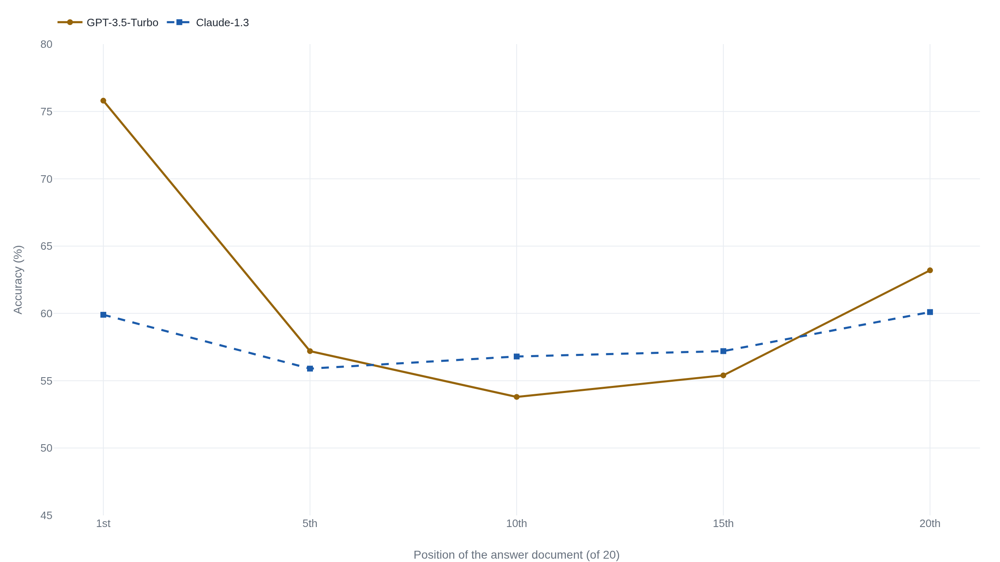

A model's accuracy traces a U as the answer moves through a long prompt
A Stanford-led group buried one answer among nineteen distractors and moved only where it sat, and GPT-3.5-Turbo lost more than twenty points in the middle while a longer context window bought nothing.
Why this matters
You have probably done this: pasted a long email thread or a contract into a chatbot and asked about one line inside it. Whether the model uses that line well depends partly on where it sits, and the middle is the worst place for it. This lesson shows the behavior with the numbers a Stanford-led group measured in 2023, then works backward through how a model takes in a long input to find what produces it. By the end you will be able to say why position changes whether a fact gets used, why a bigger context window does not fix it, and where to put the sentence that matters.
- 01
- An attention head is a weighted average that computes its own weights: what attention computes at each step, and why a longer input costs what it does.
- 02
- Rename the people in a word problem and the model does worse: a related but separate effect, where adding a true but useless sentence lowers accuracy.
The same fact, moved to the middle of a long prompt
Give a model a long document and ask a question it answers. Whether the model gets it right depends on something that should not matter: where in the document the answer sits. Nelson Liu and coauthors at Stanford, Berkeley, and Samaya AI measured this in 2023.1 They placed the one paragraph that answered each question among nineteen that were on topic but wrong, then moved only the answer paragraph from the front of the input to the back, one position at a time.
GPT-3.5-Turbo answered 75.8% correctly when the answer sat first. When the same paragraph sat tenth, in the middle, accuracy fell to 53.8%. At the very end it recovered to 63.2%. Plot accuracy against position and the line traces a U: high at both ends, low across the middle.1

The dip is not small: GPT-3.5-Turbo's worst position cost more than twenty points against its best. And it is not a quirk of reading comprehension. The same U appears in a second test with no ordinary language, a list of random key-value pairs where the model returns one value, and no meaning is there to make the middle harder to read.1
Compare the middle to answering closed book. With no documents at all, GPT-3.5-Turbo scores 56.1%. In the twenty- and thirty-document settings, its buried middle fell below that: the model did worse with the right answer in its input than with none.1
| Setting | Accuracy | What it means |
|---|---|---|
| No documents | 56.1% | Closed book: the model answers from what it already learned in training. |
| Answer in the middle | 53.8% | The right paragraph is in the input, tenth of twenty, and the model does worse than with none. |
| Answer only | 88.3% | Oracle: given just the correct paragraph, the model nearly always answers. |
This behavior is not the needle-in-a-haystack test, where the model hunts for one odd sentence in unrelated filler and current models pass easily. Here every paragraph is on topic and only one is right. It is also not the effect where adding a distractor lowers accuracy, which this paper's lesson on irrelevant context covers. Here nothing is added. The answer only moves.
The effect is not uniform. Run the same twenty-document test on Claude-1.3 and the curve barely bends: 59.9% at the front, 56.8% in the middle, 60.1% at the end, a dip of about four points where GPT-3.5-Turbo lost twenty.1 The flat cases make the slogan "models are lost in the middle" too strong. What holds across every version of the test is narrower: where a fact sits can change whether a model uses it, and for some models that swing is large.
A transformer is not told word order for free
To find why position matters, start with how a transformer reads. On its own it has no sense of order. The attention step at the core of the model, which this paper covers on its own, treats the input as a bag of tokens: without help, shuffling the words gives back the same numbers. The team that introduced the transformer in 2017 wrote that the model "contains no recurrence and no convolution," so to use word order at all it must have order fed in. Their fix added a position vector to each token, built from sine and cosine waves.2 Position is not something the model knows. It is a signal added to the input, and a model can read it well or badly like any other.
The transformers behind current chat models use a later scheme, rotary position embedding, or RoPE. It rotates each token's query and key vectors by an angle that grows with position, so the attention score between two tokens comes to depend on how far apart they sit.3 RoPE has a property its authors call long-term decay: as two tokens grow farther apart, the dependency between them weakens.3 It is tempting to stop here and say the middle is lost because the encoding fades with distance. But decay with distance predicts that far-apart tokens matter less, which pulls a model toward whatever is nearest the question, usually the most recent tokens. It explains a preference for the end, not why the very start of a long input is used well or why accuracy climbs back there. Liu's group found the U in models built on different position schemes, including ALiBi, which is not RoPE at all.1 So the encoding is part of the story, and not the whole cause.
Attention leans toward the two ends
If the position signal alone does not produce the U, look at what attention does. Two firsthand measurements point at the ends.
The first is about the start. Guangxuan Xiao and coauthors, at MIT and Meta, found that models pour a large share of attention onto the first few tokens whatever those tokens say.4 The reason they give is structural. Attention weights pass through a softmax, which forces them to add up to one across the tokens a position can see. When nothing is a strong match, the model still must put that weight somewhere. Because a model reads left to right, the earliest tokens are the only ones every later token can see, the natural place to send the surplus. They named this an attention sink.4 It accounts for the primacy half of the U: the start draws attention by construction, whatever sits there.
The second is about the whole curve. Cheng-Yu Hsieh and coauthors at MIT and Google measured how much attention a model gives each document by its slot. The attention itself is U-shaped: the start and end draw more, the middle less.5 Then they shuffled the documents into a random order and measured again. The U held. Each position kept its advantage whichever document landed there, so the bias is fixed to position and does not depend on what the document says.5
Three candidate causes, one settled behavior
Put the pieces together and the cause is not settled. Three explanations name different layers of one system. The position encoding pulls toward the end. Attention favors the start by construction and both ends in practice. And the training data may teach the habit: important content in human writing clusters at the beginning and end of a passage, and a model trained on that text could learn to weight those places. That third candidate is still open. Instruction tuning, though, is not the source: MPT-30B, a base model never tuned to follow instructions, already shows the U.1 Which layer dominates, no one has settled. Liu declines to name one cause, Hsieh locates the effect in the attention bias, and Xiao explains only the primacy half. None of the three is refuted by another.
The behavior itself is settled. It is real, it reproduces, and a bigger advertised context window does not remove it. Liu's group checked directly: where an input fit both a base model and an extended-context version of it, the two accuracy curves sat almost on top of each other. The longer window bought no better use of position.1
"Extended-context models are not necessarily better than their non-extended counterparts at using their input context."1 Liu et al., "Lost in the Middle"
Later work bounds the same point. None of it reruns Liu's exact position test on today's frontier models, so what follows is about long-context use in general. The RULER benchmark found that models advertising windows of 32,000 tokens or more often could not hold accuracy out to that length on harder tasks, though they aced the plain needle-in-a-haystack test.6 NoLiMa, in 2025, wrote its buried fact to share little wording with the question, and GPT-4o fell from 99.3% on short inputs to 69.7% at 32,000 tokens.7 Levy and coauthors held a reasoning task fixed and only padded the input with filler, and accuracy dropped well short of any model's maximum length.8 The U by position in a 2025 model is unmeasured here. The pattern that more input degrades how well the input gets used is not.
Retrieval builds a middle for the answer to hide in
This is not only a lab result. Two everyday habits walk into it. The first is pasting a long document into a chatbot and asking about one clause; if that clause sits in the middle, the model works from its worst position. The second is retrieval-augmented generation, the standard way to give a model outside knowledge: a retriever fetches the passages most likely to be relevant, stacks them into the prompt, and the model reads the stack. Liu's group tested the reader end and found it saturates early. Past about twenty retrieved documents, giving GPT-3.5-Turbo more documents added roughly one and a half points while the prompt, and the bill, kept climbing.1 The retriever keeps finding relevant text; the reader stops using the extra.
The fix that follows is blunt: put the passage you most need where the model reads best, at the start or the end, not the middle of a long stack. The finding reached production tooling on that logic. LangChain, a widely used framework for these systems, ships a document reorderer whose stated job is to counter lost in the middle by moving the most relevant passages to the beginning and end and the least relevant to the center.9 It cites Liu's paper for why it exists.
The takeaway
Where a fact sits in a long prompt can change whether the model uses it. Liu's group measured accuracy tracing a U by position: highest when the answer is first or last, lowest in the middle. For GPT-3.5-Turbo the middle cost more than twenty points and fell below answering with no documents at all. The swing varies by model: position matters, sometimes a lot, but models do not ignore the middle. The behavior comes from how a model takes in length: position is added to the input as a signal, and attention favors the start and the ends. No single one of those is the whole cause. A larger context window does not remove it, in Liu's test or the later benchmarks. So when one passage has to land, put it first or last, and when a retriever stacks twenty, remember the model reads the middle worst.
- 01
- Liu et al., "Lost in the Middle: How Language Models Use Long Contexts": the full paper, with every curve and both extra experiments.
- 02
- Hsieh et al., "RULER: What's the Real Context Size of Your Long-Context Language Models?": how far an advertised context length holds up once the task gets harder.
Sources
- arXiv · Liu et al., "Lost in the Middle: How Language Models Use Long Contexts" (TACL, 2024)
- arXiv · Vaswani et al., "Attention Is All You Need" (2017)
- arXiv · Su et al., "RoFormer: Enhanced Transformer with Rotary Position Embedding" (2021)
- arXiv · Xiao et al., "Efficient Streaming Language Models with Attention Sinks" (2023)
- arXiv · Hsieh et al., "Found in the Middle: Calibrating Positional Attention Bias Improves Long Context Utilization" (2024)
- arXiv · Hsieh et al., "RULER: What's the Real Context Size of Your Long-Context Language Models?" (2024)
- arXiv · Modarressi et al., "NoLiMa: Long-Context Evaluation Beyond Literal Matching" (2025)
- arXiv · Levy et al., "Same Task, More Tokens: the Impact of Input Length on the Reasoning Performance of Large Language Models" (2024)
- LangChain · LongContextReorder (API reference)